Sakhavat Возглавив в
июле 1969 года Азербайджанскую ССР, Гейдар Алиев в первую очередь решает укрепить
руководство Нагорно-Карабахской Автономной области проверенными кадрами.
Осенью 1973 года Гейдар Алиев предлагает избрать Первым секретарем Нагорно-Карабахского обкома Компартии Азербайджана Бориса Кеворкова, до этого работавшего Первым секретарем Кировского райкома партии Баку. 12 октября 1973 года состоялся Пленум Нагорно-Карабахского обкома КП Азербайджана, в соответствии с решением которого Гурген Мелкумян был освобожден от обязанностей Первого секретаря и члена Бюро Нагорно-Карабахского обкома, а на его место избран Борис Кеворков.
Б.Кеворков был первым руководителем НКАО не из Карабаха (он был родом из Шамахи) и занимал пост первого секретаря обкома НКАО дольше всех своих предшественников – целых 15 лет. Был освобожден от занимаемой должности лишь после начала конфликта в феврале 1988 года.
Гейдар Алиев провёл также ряд других кадровых перестановок в руководстве Нагорного Карабаха.
«Первым заместителем председателя областного совета я назначил азербайджанца. Я направлял туда работать азербайджанцев», - заявил он впоследствии в одном из своих интервью.
Этот факт подтверждают и местные армянские партийные кадры. Мушег Оганджанян, полгода проработавший с Кеворковым в должности председателя облсовета народных депутатов НКАО (1962-1974), вспоминал: «В 1973-1974 гг. все руководство области заменили «посланцами» из Баку – Кеворков, Асланов, Мурадов, Самвелов и другие «ов»-ы» [1] .
Осенью 1973 года Гейдар Алиев предлагает избрать Первым секретарем Нагорно-Карабахского обкома Компартии Азербайджана Бориса Кеворкова, до этого работавшего Первым секретарем Кировского райкома партии Баку. 12 октября 1973 года состоялся Пленум Нагорно-Карабахского обкома КП Азербайджана, в соответствии с решением которого Гурген Мелкумян был освобожден от обязанностей Первого секретаря и члена Бюро Нагорно-Карабахского обкома, а на его место избран Борис Кеворков.
Б.Кеворков был первым руководителем НКАО не из Карабаха (он был родом из Шамахи) и занимал пост первого секретаря обкома НКАО дольше всех своих предшественников – целых 15 лет. Был освобожден от занимаемой должности лишь после начала конфликта в феврале 1988 года.
Гейдар Алиев провёл также ряд других кадровых перестановок в руководстве Нагорного Карабаха.
«Первым заместителем председателя областного совета я назначил азербайджанца. Я направлял туда работать азербайджанцев», - заявил он впоследствии в одном из своих интервью.
Этот факт подтверждают и местные армянские партийные кадры. Мушег Оганджанян, полгода проработавший с Кеворковым в должности председателя облсовета народных депутатов НКАО (1962-1974), вспоминал: «В 1973-1974 гг. все руководство области заменили «посланцами» из Баку – Кеворков, Асланов, Мурадов, Самвелов и другие «ов»-ы» [1] .
Ильгусейн
Гусейнов, долгие годы проработавший на высоких должностях в органах госбезопасности
республики, вспоминал по этому поводу: «70-е годы были характерны уже тем, что армянские
националисты открыто поднимали вопрос «об исторической принадлежности территории
Карабаха Армении». Основная роль в этой «деятельности» принадлежала части интеллигенции
и молодежи области, действия которых направлялись националистическими кругами Еревана. В
1972-1974 годы только на территории области по материалам КГБ Азербайджана были
профилактированы 35 лиц армянской национальности, части которой было объявлено
официальное предупреждение» [2] .
Всегда держа руку на пульсе, армянские националисты традиционно поднимали вопрос о пересмотре границ с Азербайджаном в период важных политических перемен или накануне знаменательных событий в истории СССР или республики.
Подобное происходило и в 1972 году, когда вся страна готовилась к празднованию 50-летия образования СССР, и в 1973 году, когда страна только оправилась от торжеств, посвящённых юбилею, а в Азербайджанской ССР шла подготовка к «празднованию 50-й годовщины образования Нагорно-Карабахской Автономной области».
В своих воспоминаниях один из руководителей Международного отдела ЦК КПСС К.Брутенц писал: «В 1972 году руководство Армении, улучив момент, когда М.Суслов был в отпуске и секретариат вел А.Кириленко, официально выступило с инициативой о воссоединении Карабаха с Арменией. Постановлением секретариата руководителям Армении и Азербайджана было поручено совместно изучить поставленный вопрос и предложить его решение. Руководящие «четверки» (1-й и 2–й секретари ЦК, председатели Совминов и Президиумов Верховных Советов) с обеих сторон провели в один из уик-эндов двухдневную встречу (по одному дню на территории каждой из республик), но ни к какому соглашению не пришли. Азербайджанские представители, как и следовало ожидать, приняли предложение Еревана в штыки. В конце концов, под давлением армянской стороны условились, что встретятся вновь, но в более узком составе для выработки, учитывая постановление секретариата, хоть какой-то совместной записки. Однако запланированная встреча не состоялась: руководители Азербайджана съездили к отдыхавшему в Минеральных Водах Суслову, и тот по возвращении в Москву добился от Брежнева указания Еревану «отозвать свою записку», что и было сделано» [3] .
Всегда держа руку на пульсе, армянские националисты традиционно поднимали вопрос о пересмотре границ с Азербайджаном в период важных политических перемен или накануне знаменательных событий в истории СССР или республики.
Подобное происходило и в 1972 году, когда вся страна готовилась к празднованию 50-летия образования СССР, и в 1973 году, когда страна только оправилась от торжеств, посвящённых юбилею, а в Азербайджанской ССР шла подготовка к «празднованию 50-й годовщины образования Нагорно-Карабахской Автономной области».
В своих воспоминаниях один из руководителей Международного отдела ЦК КПСС К.Брутенц писал: «В 1972 году руководство Армении, улучив момент, когда М.Суслов был в отпуске и секретариат вел А.Кириленко, официально выступило с инициативой о воссоединении Карабаха с Арменией. Постановлением секретариата руководителям Армении и Азербайджана было поручено совместно изучить поставленный вопрос и предложить его решение. Руководящие «четверки» (1-й и 2–й секретари ЦК, председатели Совминов и Президиумов Верховных Советов) с обеих сторон провели в один из уик-эндов двухдневную встречу (по одному дню на территории каждой из республик), но ни к какому соглашению не пришли. Азербайджанские представители, как и следовало ожидать, приняли предложение Еревана в штыки. В конце концов, под давлением армянской стороны условились, что встретятся вновь, но в более узком составе для выработки, учитывая постановление секретариата, хоть какой-то совместной записки. Однако запланированная встреча не состоялась: руководители Азербайджана съездили к отдыхавшему в Минеральных Водах Суслову, и тот по возвращении в Москву добился от Брежнева указания Еревану «отозвать свою записку», что и было сделано» [3] .
В 1972 году из
Еревана в Москву Генеральному секретарю ЦК КПСС Л.Брежневу было направлено письмо от
представителей армянской интеллигенции, в котором авторы называли нецелесообразным
«раздельное существование Армянской ССР и Нагорного Карабаха».
Приводя в письме краткую историческую справку по вопросу, они возлагали всю вину на Зиновьева, Багирова и Берию, которые якобы отменили «справедливые решения Бакинского Совета от 1 декабря 1920 года» и «июньское соглашение правительств Азербайджанской ССР и Армянской ССР от 1921 года о передаче Нагорного Карабаха Армении».
Выбор этих лиц в качестве виновных не случаен. Зиновьев хотя и был в числе жертв сталинских репрессий, однако не был реабилитирован после ХХ съезда КПСС 1956 года. Багиров и Берия, напротив, считались основными организаторами сталинских репрессий.
Таким образом, армянам удобно было списать все «ошибки большевиков в национальной политике» на политических деятелей, имена которых числились в списке врагов народа.
Но самое интересное заключалось в том, что на самом деле их фамилии никогда не фигурировали среди участников заседаний по Карабаху и не упоминались в партийных переписках 1920-х годов, касавшихся территориального спора между Арменией и Азербайджаном.
В то же время авторы обращения были уверены, что «незначительное изменение республиканских границ», то есть, передача Нагорного Карабаха Армении, не помешает братской дружбе, поскольку «в течение пятидесяти лет советской власти наши народы воспитывались в духе интернационализма».
В качестве примера приводились указы Президиума Верховного Совета СССР от января и февраля 1972 года о частичном изменение границ между Узбекской ССР и Киргизской ССР, а также Узбекской ССР и Таджикской ССР. В заключение письма выражалась просьба накануне 50-летия образования Советского Союза разрешить вопрос воссоединения Нагорного Карабаха с Советской Арменией [4] .
Почти одновременно на имя Л.Брежнева было направлено обращение от т.н. представителей общественности НКАО, содержание которого было выдержано в самых лучших традициях армянства. Авторы письма, наряду с требованиями о передаче Нагорного Карабаха Армении, не забыли затронуть в нем чувствительную струнку о вековой преданности армян великому русскому народу и недоверии мусульманам.
Утрируя реальность, выдавая желаемое за действительное, авторы обращения полностью игнорировали успехи в развитии области за прошедшие 50 лет. Опустив традиционный армянский опус о прошлом Карабаха, приведем некоторые отрывки из письма, где авторы в мрачных тонах описывали «реальное положение» края:
«Пользуясь доверием и невмешательством Москвы, руководство республики всячески старается урезать не только территорию, но и правовые возможности Карабаха. Оставленные Карабаху скудные земли, медленно, но планомерно урезаясь, присоединяются к обширным равнинам соседних районов Азербайджана. Даже реки и ручейки не вправе орошать земли Карабаха. Только незначительная часть водных ресурсов области может пропитать его землю.
В то время, когда сады и посевы Карабаха гибнут от засухи, во дворах у населения соседних с областью районов настоящий рай. И от их каприза зависит снабжение Карабаха овощами, фруктами, зерном, бахчевыми и прочими. Мало того, в последнее времена усиливается заселение области азербайджанцами. Понятно, что после этого резко ускорился процесс вынужденной эмиграции армянского населения Карабаха по всему Союзу. А уходит оно потому, что ему очень трудно достать пропитание для своей семьи, […] имеется всего один филиал высшего учебного заведения на 75 мест и два филиала техникумов, […] закрыты все армянские театры и журналы, кроме одного, оставленного на хозрасчет в столице области, […] чем дальше – тем труднее сохранить свой язык и нравы» и т.д.
Интересно, что авторы этого «слёзного «воззвания», видимо, поняв, как далеко они зашли в своих фантазиях, просили не удивляться необычному тону обращения, которое они преподносили «от имени всего прогрессивного человечества». В заключение досталось и руководителям области, вину которых они видели в молчании и примирении с ситуацией в Карабахе [5].
Письма подобного содержания, в которых армянские националисты для обоснования своих претензий на Нагорный Карабах прежде всего делали упор на якобы экономическую отсталость края и низкие капиталовложения в Нагорно-Карабахскую Автономную область по сравнению с другими районами Азербайджанской ССР, ущемление политических и культурных прав армянского населения, попытки азербайджанского руководства искусственно изменить демографическую ситуацию в автономии за счет вытеснения армян и расселения здесь азербайджанцев, направлялись партийному руководству в Москву и в последующем.
Конечно, это было всего лишь ширмой, прикрытием истинной цели – дискредитировать в глазах центра партийное руководство республики и отторгнуть Нагорный Карабах от Азербайджана.
В интервью российскому журналисту Андрею Караулову на вопрос о том: «Можно ли отнести к причинам конфликта ущемление прав армянского населения Нагорного Карабаха, недостатки в социально-экономическом развитии области?», - Гейдар Алиев дал довольно подробный ответ, аргументировав его конкретными фактами и цифрами, свидетельствующими о высоких показателях социально-экономического развития НКАО в 70-80-е годы:
«К сожалению, после того как в этой области обострилась ситуация, появилось мнение о том, что причиной конфликта стало отставание Нагорного Карабаха в социально-экономической сфере и даже якобы неправильное отношение к проблемам НКАО, к его населению со стороны бывшего руководства республики.
По показателям социально-экономического развития НКАО превосходила среднереспубликанские показатели Азербайджана и Армении. Экономика области наиболее полное развитие получила именно в 70-80-е годы. Были построены железная дорога до центра области, прекрасный вокзал в Степанакерте, новый аэропорт - мы организовали регулярные рейсы между Степанакертом, Баку и Ереваном. Я позвонил Демирчяну, и мы договорились, что рейсы будут осуществлять Аэрофлот Азербайджана и Аэрофлот Армении. Видите, до каких мелочей мы продумывали все эти вопросы? Были созданы крупные предприятия: обувная фабрика, электротехнический завод, заводы конденсаторов электронной промышленности, сельхозмашиностроения и другие.
Значительные меры были предприняты и в области сельского хозяйства. Построили два крупных водохранилища с электростанцией, оросительными каналами, что значительно улучшило водоснабжение двух районов. Производство винограда выросло с 50-60 тысяч тонн в начале 70-х годов до 120-130 тысяч тонн в 1980-м. Почти в два раза увеличилось производство животноводства. Для небольшой области с населением в 170 тысяч человек это немало. Много было сделано и в социально-культурной сфере.
В Степанакерте мы создали педагогический институт. В такой небольшой области он, может быть, и не нужен, но мы пошли навстречу пожеланиям творческой интеллигенции. Преподавание велось на армянском языке. Я уже сказал о том, что строились жилые дома, школы, поликлиники; был реконструирован и оснащен новым оборудованием драматический театр. Построили большой Дом политпросвещения, я лично был там во время строительства. Открылись новые памятники… Многим деятелям искусства были присвоены звания народных и заслуженных артистов Азербайджана. Ежегодно шел внеконкурсный прием молодежи из НКАО в высшие учебные заведения Азербайджана и страны. В городе Шуша действовала большая церковь. В 1918 году она была разрушена. Мы ее полностью восстановили, пригласили мастеров из Армении. Значительно активизировались культурные связи НКАО с Арменией, и мы этому способствовали. Автономную область часто посещали руководители министерств и ведомств Армении, театры и концертные бригады, деятели культуры, ученые. Все разговоры о каких-либо ограничениях беспочвенны» [6] .
Приводя в письме краткую историческую справку по вопросу, они возлагали всю вину на Зиновьева, Багирова и Берию, которые якобы отменили «справедливые решения Бакинского Совета от 1 декабря 1920 года» и «июньское соглашение правительств Азербайджанской ССР и Армянской ССР от 1921 года о передаче Нагорного Карабаха Армении».
Выбор этих лиц в качестве виновных не случаен. Зиновьев хотя и был в числе жертв сталинских репрессий, однако не был реабилитирован после ХХ съезда КПСС 1956 года. Багиров и Берия, напротив, считались основными организаторами сталинских репрессий.
Таким образом, армянам удобно было списать все «ошибки большевиков в национальной политике» на политических деятелей, имена которых числились в списке врагов народа.
Но самое интересное заключалось в том, что на самом деле их фамилии никогда не фигурировали среди участников заседаний по Карабаху и не упоминались в партийных переписках 1920-х годов, касавшихся территориального спора между Арменией и Азербайджаном.
В то же время авторы обращения были уверены, что «незначительное изменение республиканских границ», то есть, передача Нагорного Карабаха Армении, не помешает братской дружбе, поскольку «в течение пятидесяти лет советской власти наши народы воспитывались в духе интернационализма».
В качестве примера приводились указы Президиума Верховного Совета СССР от января и февраля 1972 года о частичном изменение границ между Узбекской ССР и Киргизской ССР, а также Узбекской ССР и Таджикской ССР. В заключение письма выражалась просьба накануне 50-летия образования Советского Союза разрешить вопрос воссоединения Нагорного Карабаха с Советской Арменией [4] .
Почти одновременно на имя Л.Брежнева было направлено обращение от т.н. представителей общественности НКАО, содержание которого было выдержано в самых лучших традициях армянства. Авторы письма, наряду с требованиями о передаче Нагорного Карабаха Армении, не забыли затронуть в нем чувствительную струнку о вековой преданности армян великому русскому народу и недоверии мусульманам.
Утрируя реальность, выдавая желаемое за действительное, авторы обращения полностью игнорировали успехи в развитии области за прошедшие 50 лет. Опустив традиционный армянский опус о прошлом Карабаха, приведем некоторые отрывки из письма, где авторы в мрачных тонах описывали «реальное положение» края:
«Пользуясь доверием и невмешательством Москвы, руководство республики всячески старается урезать не только территорию, но и правовые возможности Карабаха. Оставленные Карабаху скудные земли, медленно, но планомерно урезаясь, присоединяются к обширным равнинам соседних районов Азербайджана. Даже реки и ручейки не вправе орошать земли Карабаха. Только незначительная часть водных ресурсов области может пропитать его землю.
В то время, когда сады и посевы Карабаха гибнут от засухи, во дворах у населения соседних с областью районов настоящий рай. И от их каприза зависит снабжение Карабаха овощами, фруктами, зерном, бахчевыми и прочими. Мало того, в последнее времена усиливается заселение области азербайджанцами. Понятно, что после этого резко ускорился процесс вынужденной эмиграции армянского населения Карабаха по всему Союзу. А уходит оно потому, что ему очень трудно достать пропитание для своей семьи, […] имеется всего один филиал высшего учебного заведения на 75 мест и два филиала техникумов, […] закрыты все армянские театры и журналы, кроме одного, оставленного на хозрасчет в столице области, […] чем дальше – тем труднее сохранить свой язык и нравы» и т.д.
Интересно, что авторы этого «слёзного «воззвания», видимо, поняв, как далеко они зашли в своих фантазиях, просили не удивляться необычному тону обращения, которое они преподносили «от имени всего прогрессивного человечества». В заключение досталось и руководителям области, вину которых они видели в молчании и примирении с ситуацией в Карабахе [5].
Письма подобного содержания, в которых армянские националисты для обоснования своих претензий на Нагорный Карабах прежде всего делали упор на якобы экономическую отсталость края и низкие капиталовложения в Нагорно-Карабахскую Автономную область по сравнению с другими районами Азербайджанской ССР, ущемление политических и культурных прав армянского населения, попытки азербайджанского руководства искусственно изменить демографическую ситуацию в автономии за счет вытеснения армян и расселения здесь азербайджанцев, направлялись партийному руководству в Москву и в последующем.
Конечно, это было всего лишь ширмой, прикрытием истинной цели – дискредитировать в глазах центра партийное руководство республики и отторгнуть Нагорный Карабах от Азербайджана.
В интервью российскому журналисту Андрею Караулову на вопрос о том: «Можно ли отнести к причинам конфликта ущемление прав армянского населения Нагорного Карабаха, недостатки в социально-экономическом развитии области?», - Гейдар Алиев дал довольно подробный ответ, аргументировав его конкретными фактами и цифрами, свидетельствующими о высоких показателях социально-экономического развития НКАО в 70-80-е годы:
«К сожалению, после того как в этой области обострилась ситуация, появилось мнение о том, что причиной конфликта стало отставание Нагорного Карабаха в социально-экономической сфере и даже якобы неправильное отношение к проблемам НКАО, к его населению со стороны бывшего руководства республики.
По показателям социально-экономического развития НКАО превосходила среднереспубликанские показатели Азербайджана и Армении. Экономика области наиболее полное развитие получила именно в 70-80-е годы. Были построены железная дорога до центра области, прекрасный вокзал в Степанакерте, новый аэропорт - мы организовали регулярные рейсы между Степанакертом, Баку и Ереваном. Я позвонил Демирчяну, и мы договорились, что рейсы будут осуществлять Аэрофлот Азербайджана и Аэрофлот Армении. Видите, до каких мелочей мы продумывали все эти вопросы? Были созданы крупные предприятия: обувная фабрика, электротехнический завод, заводы конденсаторов электронной промышленности, сельхозмашиностроения и другие.
Значительные меры были предприняты и в области сельского хозяйства. Построили два крупных водохранилища с электростанцией, оросительными каналами, что значительно улучшило водоснабжение двух районов. Производство винограда выросло с 50-60 тысяч тонн в начале 70-х годов до 120-130 тысяч тонн в 1980-м. Почти в два раза увеличилось производство животноводства. Для небольшой области с населением в 170 тысяч человек это немало. Много было сделано и в социально-культурной сфере.
В Степанакерте мы создали педагогический институт. В такой небольшой области он, может быть, и не нужен, но мы пошли навстречу пожеланиям творческой интеллигенции. Преподавание велось на армянском языке. Я уже сказал о том, что строились жилые дома, школы, поликлиники; был реконструирован и оснащен новым оборудованием драматический театр. Построили большой Дом политпросвещения, я лично был там во время строительства. Открылись новые памятники… Многим деятелям искусства были присвоены звания народных и заслуженных артистов Азербайджана. Ежегодно шел внеконкурсный прием молодежи из НКАО в высшие учебные заведения Азербайджана и страны. В городе Шуша действовала большая церковь. В 1918 году она была разрушена. Мы ее полностью восстановили, пригласили мастеров из Армении. Значительно активизировались культурные связи НКАО с Арменией, и мы этому способствовали. Автономную область часто посещали руководители министерств и ведомств Армении, театры и концертные бригады, деятели культуры, ученые. Все разговоры о каких-либо ограничениях беспочвенны» [6] .
Гейдар Алиев
у мавзолея Молла Панаха Вагифа в городе Шуша
Каждая поездка
Гейдара Алиева в Нагорный Карабах, где он бывал иногда по несколько раз в год,
становилась знаменательным событием в жизни автономной области, поскольку сопровождалась
открытием новых промышленных и социальных объектов, дорог, что являлось крупным вкладом
в жизнь НКАО.
В октябре 1973 года Гейдар Алиев находился в Степанакерте по случаю присуждения Нагорно-Карабахской Автономной области переходящего Красного Знамени ЦК КПСС, СМ СССР, ВЦСПС и ЦК ВЛКСМ. Уже через месяц Гейдар Алиев участвует в торжественном заседании Нагорно-Карабахского обкома партии и областного Совета депутатов по случаю 50-й годовщины юбилея автономной области. В честь этой даты НКАО была удостоена орденов Ленина и Дружбы народов.
Впоследствии некоторые отечественные дилетанты обвинят Гейдара Алиева в особом внимании, которое он оказывал развитию НКАО. Во время своего выступления на заседании Милли Меджлиса 23 февраля 2001 года Президент Азербайджанской Республики Гейдар Алиев так ответил на эти несправедливые нападки: «Когда я руководил республикой, это открыто следует признать, мы создавали Нагорному Карабаху более благоприятные экономические условия, отдавали предпочтение развитию его экономики. Так как постоянно вставал вопрос о том, что якобы в Азербайджане зажимают Нагорный Карабах и армяне там не могут развиваться. Чтобы сохранить целостность Азербайджана, его территории, мы в то время, повторяю, уделяли больше внимание Нагорному Карабаху. Я и сегодня признаю, что делал это, чтобы не дать возможность Нагорному Карабаху, армянам поднимать этот вопрос» [7] .
В октябре 1973 года Гейдар Алиев находился в Степанакерте по случаю присуждения Нагорно-Карабахской Автономной области переходящего Красного Знамени ЦК КПСС, СМ СССР, ВЦСПС и ЦК ВЛКСМ. Уже через месяц Гейдар Алиев участвует в торжественном заседании Нагорно-Карабахского обкома партии и областного Совета депутатов по случаю 50-й годовщины юбилея автономной области. В честь этой даты НКАО была удостоена орденов Ленина и Дружбы народов.
Впоследствии некоторые отечественные дилетанты обвинят Гейдара Алиева в особом внимании, которое он оказывал развитию НКАО. Во время своего выступления на заседании Милли Меджлиса 23 февраля 2001 года Президент Азербайджанской Республики Гейдар Алиев так ответил на эти несправедливые нападки: «Когда я руководил республикой, это открыто следует признать, мы создавали Нагорному Карабаху более благоприятные экономические условия, отдавали предпочтение развитию его экономики. Так как постоянно вставал вопрос о том, что якобы в Азербайджане зажимают Нагорный Карабах и армяне там не могут развиваться. Чтобы сохранить целостность Азербайджана, его территории, мы в то время, повторяю, уделяли больше внимание Нагорному Карабаху. Я и сегодня признаю, что делал это, чтобы не дать возможность Нагорному Карабаху, армянам поднимать этот вопрос» [7] .
21 марта 1975
года состоялся Пленум обкома НКАО, который позже вызвал шквал критики у армянских
националистов различного калибра, посылавших многочисленные письма руководству Армении и
СССР с резкой критикой в адрес партийного руководства автономной области и с
требованиями его отставки.
Причиной подобной реакции стало выступление на Пленуме Первого секретаря областного комитета партии Нагорно-Карабахской Автономной области Б.Кеворкова, в котором прозвучали конкретные фамилии и факты о националистических элементах, стремившихся нарушить политическую стабильность в регионе.
Так, затронув в начале своего доклада текущие вопросы, Б.Кеворков далее перешел к основной теме – борьбе «рабочего класса с буржуазным национализмом и мелкобуржуазными настроениями национального эгоизма, чванства, исключительности, замкнутости». Он в резкой форме осудил попытку отдельных лиц склонить армянскую молодежь к совершению действий, наносящих ущерб «дружбе советских народов», заявив, что их действия перекликаются «с идейно-политическими установками дашнакских зарубежных центров, с целями идеологических служб империализма». Первый секретарь обкома призвал коммунистов «давать принципиальный отпор любым, даже малейшим, проявлениям националистических пережитков» и создать обстановку «нетерпимости к проявлениям национальной ограниченности, чуждых нравов национальной исключительности, кичливости».
Далее, осуждая националистические предрассудки, Кеворков расценил как политически вредные «попытки Баграта Улубабяна (председатель Союза писателей НКАО) и некоторых солидаризировавшихся с ним отсталых, идейно незрелых одиночек интерпретировать с порочных позиций национального эгоизма и национальной ограниченности вопрос о Нагорном Карабахе», а армянские притязания на Карабах в 1965-1967 годах представил как «попытки отдельных идейно незрелых лиц поднять вопрос о том, где должно быть место Нагорного Карабаха».
При этом Кеворков, обращаясь к досоветскому периоду истории Карабаха, отметил, что «дашнаки усиленно добивались присоединения Нагорного Карабаха к дашнакской Армении, развили бурную деятельность в этом направлении…» и привел в качестве свидетельств выдержку из доклада А.И.Микояна В.Ленину от 22 мая 1919 г. и ссылку на мнение одного из партийных руководителей Карабаха А.Каракозова, озвученное в докладе на Бюро Компартии Азербайджана 10 июля 1920 г.
Отстаивая идею неотъемлемости, единства Нагорного Карабаха с Азербайджаном, Кеворков заявил участникам пленума: «Образованием Нагорно-Карабахской Автономной области в составе Азербайджанской ССР раз и навсегда был решен пресловутый «карабахский вопрос», не раз использовавшийся империалистами и их дашнакскими […] агентами в антинародных целях», - и в стремлении обосновать свою правоту привел выступление Левона Мирзояна, представителя Совнаркома, а впоследствии Первого секретаря ЦК Компартии Азербайджана (1926—1929), который на состоявшемся 1 августа 1921 года в селении Кендхурт чрезвычайном съезде Советов 2-го участка Шушинского уезда заявил, что Карабах с экономической, духовной и политической, а также национальной точек зрения тесно связан с Азербайджаном – его столицей Баку.
«Второй факт, – продолжил Кеворков, – представляет собой постановление Пленума Кавбюро ЦК РКП(б) от 5 июля 1921 года».
Причиной подобной реакции стало выступление на Пленуме Первого секретаря областного комитета партии Нагорно-Карабахской Автономной области Б.Кеворкова, в котором прозвучали конкретные фамилии и факты о националистических элементах, стремившихся нарушить политическую стабильность в регионе.
Так, затронув в начале своего доклада текущие вопросы, Б.Кеворков далее перешел к основной теме – борьбе «рабочего класса с буржуазным национализмом и мелкобуржуазными настроениями национального эгоизма, чванства, исключительности, замкнутости». Он в резкой форме осудил попытку отдельных лиц склонить армянскую молодежь к совершению действий, наносящих ущерб «дружбе советских народов», заявив, что их действия перекликаются «с идейно-политическими установками дашнакских зарубежных центров, с целями идеологических служб империализма». Первый секретарь обкома призвал коммунистов «давать принципиальный отпор любым, даже малейшим, проявлениям националистических пережитков» и создать обстановку «нетерпимости к проявлениям национальной ограниченности, чуждых нравов национальной исключительности, кичливости».
Далее, осуждая националистические предрассудки, Кеворков расценил как политически вредные «попытки Баграта Улубабяна (председатель Союза писателей НКАО) и некоторых солидаризировавшихся с ним отсталых, идейно незрелых одиночек интерпретировать с порочных позиций национального эгоизма и национальной ограниченности вопрос о Нагорном Карабахе», а армянские притязания на Карабах в 1965-1967 годах представил как «попытки отдельных идейно незрелых лиц поднять вопрос о том, где должно быть место Нагорного Карабаха».
При этом Кеворков, обращаясь к досоветскому периоду истории Карабаха, отметил, что «дашнаки усиленно добивались присоединения Нагорного Карабаха к дашнакской Армении, развили бурную деятельность в этом направлении…» и привел в качестве свидетельств выдержку из доклада А.И.Микояна В.Ленину от 22 мая 1919 г. и ссылку на мнение одного из партийных руководителей Карабаха А.Каракозова, озвученное в докладе на Бюро Компартии Азербайджана 10 июля 1920 г.
Отстаивая идею неотъемлемости, единства Нагорного Карабаха с Азербайджаном, Кеворков заявил участникам пленума: «Образованием Нагорно-Карабахской Автономной области в составе Азербайджанской ССР раз и навсегда был решен пресловутый «карабахский вопрос», не раз использовавшийся империалистами и их дашнакскими […] агентами в антинародных целях», - и в стремлении обосновать свою правоту привел выступление Левона Мирзояна, представителя Совнаркома, а впоследствии Первого секретаря ЦК Компартии Азербайджана (1926—1929), который на состоявшемся 1 августа 1921 года в селении Кендхурт чрезвычайном съезде Советов 2-го участка Шушинского уезда заявил, что Карабах с экономической, духовной и политической, а также национальной точек зрения тесно связан с Азербайджаном – его столицей Баку.
«Второй факт, – продолжил Кеворков, – представляет собой постановление Пленума Кавбюро ЦК РКП(б) от 5 июля 1921 года».
Борис
Кеворков
Первый секретарь Нагорно-Карабахского обкома КП АзССР
(1973-1988)
Первый секретарь Нагорно-Карабахского обкома КП АзССР
(1973-1988)
В выступлении Б.Кеворкова
прозвучала жесткая критика в адрес исключительно представителей армянской интеллигенции
и руководителей автономной области – поэта Богдана Джаняна, начальника управления
культуры Жана Андряна, директора музея Ш.Мкртчяна, начальника статуправления Захаряна,
редактора областной газеты А.Аванесяна и других, а также были приведены примеры снятия с
работы, исключения из партии и т.д.
Особенно Кеворков возмутился чтением студентами медучилища стихотворения «Плач Карабаха» и осудил распространение среди молодежи материалов суда над Согомоном Тейлиряном, который отличился тем, что, будучи дашнакским террористом, застрелил в 1921 году в Берлине министра внутренних дел правительства младотурок Османской Турции Талята пашу. Осудив армян за расправу над Аршадом Мамедовым в июле 1967 г., докладчик также припомнил и взрыв гранаты в 1971 г. у гостиницы «Карабах» в Степанакерте. Кеворков отметил грубые ошибки, допущенные бывшим Первым секретарём Г.Мелкумяном и секретарем по идеологии Н.Арутюняном.
Особенно Кеворков возмутился чтением студентами медучилища стихотворения «Плач Карабаха» и осудил распространение среди молодежи материалов суда над Согомоном Тейлиряном, который отличился тем, что, будучи дашнакским террористом, застрелил в 1921 году в Берлине министра внутренних дел правительства младотурок Османской Турции Талята пашу. Осудив армян за расправу над Аршадом Мамедовым в июле 1967 г., докладчик также припомнил и взрыв гранаты в 1971 г. у гостиницы «Карабах» в Степанакерте. Кеворков отметил грубые ошибки, допущенные бывшим Первым секретарём Г.Мелкумяном и секретарем по идеологии Н.Арутюняном.
Выступление
Б.Кеворкова, опубликованное на страницах газеты «Советский Карабах» 23 марта 1975 года,
дало армянским националистам удобный повод вновь начать шумиху вокруг Нагорного Карабаха
после наступившей паузы в связи проведением торжеств, посвящённых 50-летию автономии.
Началась мощная кампания по отправке писем и обращений в Москву. Среди авторов писем замелькали имена армянских писателей Л.Гурунца и С.Капутикян.
Интересно, что в своих письмах на имя Генерального секретаря ЦК КПСС Л.Брежнева эти деятели не нашли в себе смелости открыто поставить перед центральным руководством вопрос о передаче Нагорного Карабаха Армении. Больше всего их самолюбие задело то, что Кеворков накануне 60-й годовщины событий 1915 года на территории Османской империи, затронув тему т.н. «геноцида» армян, сказал буквально следующее: «Несколько лет назад в г.Степанакерт среди некоторой части молодежи нелегально распространялся материал о судебном процессе над Согомоном Тейлиряном, кстати, отпечатанный на пишущей машинке областной прокуратуры, под носом у бывших ее руководителей. Чем заслужил такой интерес к своей персоне Согомон Тейлирян? Оказывается тем, что он, будучи дашнакским террористом, застрелил в Берлине одного из руководителей движения младотурок Талята пашу... Однако давайте попытаемся разобраться в том, насколько правомерны действия лиц, которые, по существу, стали пропагандистами «героизма» дашнакских террористов…»
Гнев негодования авторов и вызвало то, что Кеворков, являясь армянином, вместо того чтобы использовать высокую партийную трибуну для клеймения крепкими эпитетами виновников «геноцида армян», обошёлся более мягкими выражениями при оценке личности Талята паши, назвав его «неприятным человеком». Еще большее негодование авторов писем вызвали передовица в газете «Правда» от 29 мая 1975 года, посвящённая мартовскому партийному Пленуму в НКАО, и данная в ней высокая оценка выступлению Б.Кеворкова.
В передовице, в частности, отмечалось: «Пленум Нагорно-Карабахского обкома Компартии Азербайджана решительно осудил беспринципную позицию бывшего состава Бюро по отношению к отдельным политически незрелым людям, допускавшим идеализацию старины, прославление патриархальщины, отход от партийных классовых позиций в оценке исторических событий» [8] .
О последствиях выступления Б.Кеворкова в 1975 году вспоминал и Гейдар Алиев: «…Националисты вновь подняли головы и начали всевозможные провокации против партийного комитета НКАО, и в первую очередь против Кеворкова. Пошли телеграммы в Москву, в другие регионы, ситуация накалялась. Через 2 месяца мы встретились в Москве с Демирчяном и проговорили с ним четыре часа. Я довел до его сведения, что все проблемы НКАО, если они есть, должно решать областное руководство и руководство Азербайджана. А вмешательство отдельных лиц в дела Карабаха может принести лишь вред нашим взаимоотношениям, и мы не можем этого позволить… Ситуация была вновь стабилизирована» [9] .
Началась мощная кампания по отправке писем и обращений в Москву. Среди авторов писем замелькали имена армянских писателей Л.Гурунца и С.Капутикян.
Интересно, что в своих письмах на имя Генерального секретаря ЦК КПСС Л.Брежнева эти деятели не нашли в себе смелости открыто поставить перед центральным руководством вопрос о передаче Нагорного Карабаха Армении. Больше всего их самолюбие задело то, что Кеворков накануне 60-й годовщины событий 1915 года на территории Османской империи, затронув тему т.н. «геноцида» армян, сказал буквально следующее: «Несколько лет назад в г.Степанакерт среди некоторой части молодежи нелегально распространялся материал о судебном процессе над Согомоном Тейлиряном, кстати, отпечатанный на пишущей машинке областной прокуратуры, под носом у бывших ее руководителей. Чем заслужил такой интерес к своей персоне Согомон Тейлирян? Оказывается тем, что он, будучи дашнакским террористом, застрелил в Берлине одного из руководителей движения младотурок Талята пашу... Однако давайте попытаемся разобраться в том, насколько правомерны действия лиц, которые, по существу, стали пропагандистами «героизма» дашнакских террористов…»
Гнев негодования авторов и вызвало то, что Кеворков, являясь армянином, вместо того чтобы использовать высокую партийную трибуну для клеймения крепкими эпитетами виновников «геноцида армян», обошёлся более мягкими выражениями при оценке личности Талята паши, назвав его «неприятным человеком». Еще большее негодование авторов писем вызвали передовица в газете «Правда» от 29 мая 1975 года, посвящённая мартовскому партийному Пленуму в НКАО, и данная в ней высокая оценка выступлению Б.Кеворкова.
В передовице, в частности, отмечалось: «Пленум Нагорно-Карабахского обкома Компартии Азербайджана решительно осудил беспринципную позицию бывшего состава Бюро по отношению к отдельным политически незрелым людям, допускавшим идеализацию старины, прославление патриархальщины, отход от партийных классовых позиций в оценке исторических событий» [8] .
О последствиях выступления Б.Кеворкова в 1975 году вспоминал и Гейдар Алиев: «…Националисты вновь подняли головы и начали всевозможные провокации против партийного комитета НКАО, и в первую очередь против Кеворкова. Пошли телеграммы в Москву, в другие регионы, ситуация накалялась. Через 2 месяца мы встретились в Москве с Демирчяном и проговорили с ним четыре часа. Я довел до его сведения, что все проблемы НКАО, если они есть, должно решать областное руководство и руководство Азербайджана. А вмешательство отдельных лиц в дела Карабаха может принести лишь вред нашим взаимоотношениям, и мы не можем этого позволить… Ситуация была вновь стабилизирована» [9] .
В очередной раз
Б.Кеворков попал под шквал критики своих соплеменников, когда в 1977 году в шестом
номере журнала «Проблемы мира и социализма», который издавался в Праге на 32 языках и
распространялся в 145 странах мира, было опубликовано его интервью под названием «Мы
видели братство наций». Авторы интервью – член Национального совета Компартии Индии
Сарада Митра и член ЦК Компартии Ирака Адель Хаба - побывали в Азербайджанской ССР по
приглашению ЦК КПСС, чтобы ознакомиться с развитием национальных отношений. В НКАО они
встретились с Первым секретарем Нагорно-Карабахского обкома партии Кеворковым и задали
ему вопрос о том, почему Нагорный Карабах входит в состав Азербайджанской ССР, а не
Армянской, от которой его отделяет лишь узкая полоска земли.
Кеворков ответил: «Хотя автономная область и близка к армянской союзной республике, однако они отделены высокими горами. Армяне Нагорного Карабаха обрели государственность в составе Азербайджана и выбрали эту долю добровольно. Край расцвел в составе Азербайджана… Только националисты могут говорить: «Пусть я буду плохо жить, но буду связан с Арменией» [10] .
Едва этот номер лег на стол писателя Серо Ханзадяна, как он написал открытое письмо Л.И.Брежневу. Тем более что подвернулся удобный повод накануне подготовки принятия новой Конституции СССР в очередной раз напомнить центральному руководству о необходимости передачи Нагорного Карабаха Армении.
В начале своего письма Ханзадян вновь вернулся к мартовскому Пленуму обкома Нагорного Карабаха 1975 года, расценив выступление на нем Кеворкова как попытку «облить грязью успехи и достижения социалистической Армении». Подробно остановившись на тезисе из интервью Кеворкова о том, что «армяне Нагорного Карабаха обрели государственность в составе Азербайджана и выбрали эту долю добровольно», Ханзадян охарактеризовал «долю» как «несправедливость, которая должна быть ликвидирована». В заключение своего письма в традиционной армянской манере Ханзадян просил:
«Дорогой Леонид Ильич! Это не впервые, когда нерешённая проблема Карабаха мешает укреплению дружбы между двумя народами. Вся надежда на то, что Вы решите, наконец, вопрос, который вот уже более полувека олицетворяет саму несправедливость.
Находящаяся в пределах нашего единого могучего государства исконно армянская область с более чем 80-процентным армянским населением, армянскими школами должна находиться в составе Советской Социалистической Армении. Справедливое решение этого вопроса будет расценено народами мира как новое торжество ленинской национальной политики» [11] .
В результате Первому секретарю ЦК Армении К.Демирчяну пришлось держать ответ перед Москвой за дерзость своего литератора, а Азербайджан в очередной раз не поддался на армянскую провокацию.
В 1975 году в Баку с целью участия в Днях советской литературы приехала небезызвестная Мариэтта Шагинян, которая еще в конце 40-х годов подверглась обструкции и вынуждена была принести свои извинения руководству Азербайджана во главе с М.Дж. Багировым за то, что в изданной в начале 1946 года в ереванском издательстве «Арменгиз» книге «Советское Закавказье» клеветала на азербайджанское население Карабаха, приписывая ему черты отсталости и грубости, искажая факты из истории и культуры Азербайджана.
Побывав в Кировабаде и НКАО, проведя встречи с представителями местной армянской интеллигенции, она приехала в Баку, где её принял Гейдар Алиев. Во время встречи, поделившись своими наблюдениями с Гейдаром Алиевым, она вынуждена была признать, что армяне живут в Азербайджане превосходно и «катаются как сыр в масле». Во время встречи Шагинян отметила также, что среди армянской интеллигенции по-прежнему существуют настроения о необходимости передачи НКАО Армении [12] .
В 1977 году в стране шла полным ходом подготовка к принятию третьей Конституции СССР, получившей в исторической литературе название «Брежневской». Накануне этого знаменательного события армяне, следуя своим традициям, вновь стали посылать в Москву многочисленные обращения с требованием присоединить НКАО к Армении.
5 июля 1977 года за подписями известной армянской писательницы С.Капутикян, бывшего секретаря обкома НКАО Т.Григоряна, профессора Г.Епископосова, персонального пенсионера союзного значения С.Акопяна и других в Конституционную комиссию было направлено письмо, котором в очередной раз поднимался вопрос о необходимости передачи НКАО и Нахчыванской АССР Армении.
С первых же предложений авторы письма фальсифицировали исторические факты, выдавая желаемое за действительное. Чтобы обосновать идею пересмотра границ между Арменией и Азербайджаном, они пытались убедить советское руководство, что границы между Арменией и Азербайджаном были установлены в период пребывания у власти в обеих республиках националистов в 1918-1920 гг., в результате межнациональных кровопролитных войн и резни, и «нашествия в Закавказье германо-турецких империалистов». Вновь в ход были пущены манипуляции с цифрами о «геноциде армян» в Турции и Азербайджане». То есть, подобной односторонней информацией авторы пытались показать, что жертвами межнациональных столкновений были исключительно армяне, у которых азербайджанцы якобы «отобрали их земли».
Целиком и полностью извращая исторические факты, авторы письма пытались доказать, что якобы «исконно армянские территории» - Нахчыван и Нагорный Карабах, Дашкесанский, Шамхорский, Гядабейский, Ханларский и Шаумяновский районы - были оккупированы турецкими войсками и переданы Азербайджану.
Авторы письма не могли не знать, что именно нерешённость пограничных вопросов и стала причиной кровопролитных войн между двумя государствами, конец которым был положен лишь после установления советской власти в Азербайджане и Армении в 1920 году. Советская власть установила мораторий в этих конфликтах путем создания автономных образований в Нахчыване и Нагорном Карабахе.
Авторы письма приводят текст декларации Баксовета от 1 декабря 1920 года, которая, по их мнению, фактически являлась программой большевиков по решению вопроса о спорных территориях между Арменией и Азербайджаном. В декларации предлагалось передать Зангезур и Нахчыван Армении, а Нагорному Карабаху предоставить право на самоопределение. Однако при реализации этой программы в отношении Нахчывана основной помехой для Армении, как считали авторы письма, стала Турция. Однако вопрос о Нахчыване был решен на основе советско-турецкого договора о дружбе и братстве. Что же касается судьбы Нагорного Карабаха, то, по мнению авторов письма, в этом вопросе армянам не дали возможности использовать свое право на самоопределение.
Однако почему-то в письме не указывалось, кто якобы «помешал армянам использовать это право». Видимо, тогда пришлось бы признать, что вопрос об автономии армян Нагорного Карабаха в составе Азербайджана был решен в партийном порядке эмиссарами Москвы на Кавказе - Г.Орджоникидзе и С.Кировым, а не «турецко-германскими империалистами и мусаватистскими националистами». Таким образом, именно Москва сыграла решающую роль в окончательном определении границ не только между Арменией и Азербайджаном, но и между этими республиками с Турцией.
Основным аргументом авторов письма в пользу необходимости передачи Нагорного Карабаха Армении являлись якобы имеющиеся препятствия, которые чинило азербайджанское руководство экономическому и культурному развитию армянского населения области, нехватка земельных фондов в Армении для развития экономики и размещения зарубежных армян, желающих вернуться на родину.
Авторы письма манипулировали итогами переписей 1926 и 1970 годов без анализа объективных причин происходивших в НКАО демографических процессов, а именно - уменьшения численности армян и увеличения численности азербайджанцев. Они сетовали на то, что подобная ситуация наблюдается и в других регионах Азербайджана, где проживают армяне, особенно в Баку и Кировабаде. Якобы армян лишают права получать образование на родном языке, иметь свой театр и т.д.
Вновь была затронута «чувствительная струнка» об исторической дружбе армянского и русского народов, о вкладе армян в победу России в русско-персидских и русско-турецких войнах, в установление советской власти и победу над фашизмом в годы Великой Отечественной войны. Поэтому авторы письма делали вывод, что армянский народ имеет исключительное право на принятие во внимание его интересов и чаяний, законные стремления сохранить свои исторические, материально-духовные ценности, на воссоединение с Арменией тех районов, которые якобы были отторгнуты от неё турецкими нашествиями и азербайджанскими мусаватистами.
При этом просто цинично звучали предложения в адрес Азербайджана пожертвовать частью своих исторических территорий в пользу Армении в знак т.н. «братских интересов», от чего якобы Азербайджан нисколько не пострадал бы. При этом сопоставлялись размеры территорий и численность населения двух республик, чтобы показать превосходство Азербайджана и призвать руководство страны удовлетворить территориальные притязания Армении, которой хронически не хватает пригодных земель для экономического развития и размещения армянских мигрантов.
В заключение письма авторы вновь попытались доказать, что пересмотр границ между Арменией и Азербайджаном будет соответствовать принципам демократии, коммунистическому строительству и подлинной дружбе народов. Поэтому предлагалось внести соответствующие изменения в Конституцию СССР и рассмотреть вопрос о целесообразности включения Нахчыванской АССР и НКАО в состав Армении.
В короткой справке, приложенной к письму от 22 июля 1977 года, заведующий сектором Отдела организационно-партийной работы ЦК КПСС А.Санников сообщал, что с одним из авторов письма С.Акопяном по существу вопроса беседовал инструктор Отдела организационно-партийной работы ЦК КПСС Громыко, а 11 августа 1977 года о письме было доложено секретарю ЦК КПСС И.Капитонову [13] .
Кеворков ответил: «Хотя автономная область и близка к армянской союзной республике, однако они отделены высокими горами. Армяне Нагорного Карабаха обрели государственность в составе Азербайджана и выбрали эту долю добровольно. Край расцвел в составе Азербайджана… Только националисты могут говорить: «Пусть я буду плохо жить, но буду связан с Арменией» [10] .
Едва этот номер лег на стол писателя Серо Ханзадяна, как он написал открытое письмо Л.И.Брежневу. Тем более что подвернулся удобный повод накануне подготовки принятия новой Конституции СССР в очередной раз напомнить центральному руководству о необходимости передачи Нагорного Карабаха Армении.
В начале своего письма Ханзадян вновь вернулся к мартовскому Пленуму обкома Нагорного Карабаха 1975 года, расценив выступление на нем Кеворкова как попытку «облить грязью успехи и достижения социалистической Армении». Подробно остановившись на тезисе из интервью Кеворкова о том, что «армяне Нагорного Карабаха обрели государственность в составе Азербайджана и выбрали эту долю добровольно», Ханзадян охарактеризовал «долю» как «несправедливость, которая должна быть ликвидирована». В заключение своего письма в традиционной армянской манере Ханзадян просил:
«Дорогой Леонид Ильич! Это не впервые, когда нерешённая проблема Карабаха мешает укреплению дружбы между двумя народами. Вся надежда на то, что Вы решите, наконец, вопрос, который вот уже более полувека олицетворяет саму несправедливость.
Находящаяся в пределах нашего единого могучего государства исконно армянская область с более чем 80-процентным армянским населением, армянскими школами должна находиться в составе Советской Социалистической Армении. Справедливое решение этого вопроса будет расценено народами мира как новое торжество ленинской национальной политики» [11] .
В результате Первому секретарю ЦК Армении К.Демирчяну пришлось держать ответ перед Москвой за дерзость своего литератора, а Азербайджан в очередной раз не поддался на армянскую провокацию.
В 1975 году в Баку с целью участия в Днях советской литературы приехала небезызвестная Мариэтта Шагинян, которая еще в конце 40-х годов подверглась обструкции и вынуждена была принести свои извинения руководству Азербайджана во главе с М.Дж. Багировым за то, что в изданной в начале 1946 года в ереванском издательстве «Арменгиз» книге «Советское Закавказье» клеветала на азербайджанское население Карабаха, приписывая ему черты отсталости и грубости, искажая факты из истории и культуры Азербайджана.
Побывав в Кировабаде и НКАО, проведя встречи с представителями местной армянской интеллигенции, она приехала в Баку, где её принял Гейдар Алиев. Во время встречи, поделившись своими наблюдениями с Гейдаром Алиевым, она вынуждена была признать, что армяне живут в Азербайджане превосходно и «катаются как сыр в масле». Во время встречи Шагинян отметила также, что среди армянской интеллигенции по-прежнему существуют настроения о необходимости передачи НКАО Армении [12] .
В 1977 году в стране шла полным ходом подготовка к принятию третьей Конституции СССР, получившей в исторической литературе название «Брежневской». Накануне этого знаменательного события армяне, следуя своим традициям, вновь стали посылать в Москву многочисленные обращения с требованием присоединить НКАО к Армении.
5 июля 1977 года за подписями известной армянской писательницы С.Капутикян, бывшего секретаря обкома НКАО Т.Григоряна, профессора Г.Епископосова, персонального пенсионера союзного значения С.Акопяна и других в Конституционную комиссию было направлено письмо, котором в очередной раз поднимался вопрос о необходимости передачи НКАО и Нахчыванской АССР Армении.
С первых же предложений авторы письма фальсифицировали исторические факты, выдавая желаемое за действительное. Чтобы обосновать идею пересмотра границ между Арменией и Азербайджаном, они пытались убедить советское руководство, что границы между Арменией и Азербайджаном были установлены в период пребывания у власти в обеих республиках националистов в 1918-1920 гг., в результате межнациональных кровопролитных войн и резни, и «нашествия в Закавказье германо-турецких империалистов». Вновь в ход были пущены манипуляции с цифрами о «геноциде армян» в Турции и Азербайджане». То есть, подобной односторонней информацией авторы пытались показать, что жертвами межнациональных столкновений были исключительно армяне, у которых азербайджанцы якобы «отобрали их земли».
Целиком и полностью извращая исторические факты, авторы письма пытались доказать, что якобы «исконно армянские территории» - Нахчыван и Нагорный Карабах, Дашкесанский, Шамхорский, Гядабейский, Ханларский и Шаумяновский районы - были оккупированы турецкими войсками и переданы Азербайджану.
Авторы письма не могли не знать, что именно нерешённость пограничных вопросов и стала причиной кровопролитных войн между двумя государствами, конец которым был положен лишь после установления советской власти в Азербайджане и Армении в 1920 году. Советская власть установила мораторий в этих конфликтах путем создания автономных образований в Нахчыване и Нагорном Карабахе.
Авторы письма приводят текст декларации Баксовета от 1 декабря 1920 года, которая, по их мнению, фактически являлась программой большевиков по решению вопроса о спорных территориях между Арменией и Азербайджаном. В декларации предлагалось передать Зангезур и Нахчыван Армении, а Нагорному Карабаху предоставить право на самоопределение. Однако при реализации этой программы в отношении Нахчывана основной помехой для Армении, как считали авторы письма, стала Турция. Однако вопрос о Нахчыване был решен на основе советско-турецкого договора о дружбе и братстве. Что же касается судьбы Нагорного Карабаха, то, по мнению авторов письма, в этом вопросе армянам не дали возможности использовать свое право на самоопределение.
Однако почему-то в письме не указывалось, кто якобы «помешал армянам использовать это право». Видимо, тогда пришлось бы признать, что вопрос об автономии армян Нагорного Карабаха в составе Азербайджана был решен в партийном порядке эмиссарами Москвы на Кавказе - Г.Орджоникидзе и С.Кировым, а не «турецко-германскими империалистами и мусаватистскими националистами». Таким образом, именно Москва сыграла решающую роль в окончательном определении границ не только между Арменией и Азербайджаном, но и между этими республиками с Турцией.
Основным аргументом авторов письма в пользу необходимости передачи Нагорного Карабаха Армении являлись якобы имеющиеся препятствия, которые чинило азербайджанское руководство экономическому и культурному развитию армянского населения области, нехватка земельных фондов в Армении для развития экономики и размещения зарубежных армян, желающих вернуться на родину.
Авторы письма манипулировали итогами переписей 1926 и 1970 годов без анализа объективных причин происходивших в НКАО демографических процессов, а именно - уменьшения численности армян и увеличения численности азербайджанцев. Они сетовали на то, что подобная ситуация наблюдается и в других регионах Азербайджана, где проживают армяне, особенно в Баку и Кировабаде. Якобы армян лишают права получать образование на родном языке, иметь свой театр и т.д.
Вновь была затронута «чувствительная струнка» об исторической дружбе армянского и русского народов, о вкладе армян в победу России в русско-персидских и русско-турецких войнах, в установление советской власти и победу над фашизмом в годы Великой Отечественной войны. Поэтому авторы письма делали вывод, что армянский народ имеет исключительное право на принятие во внимание его интересов и чаяний, законные стремления сохранить свои исторические, материально-духовные ценности, на воссоединение с Арменией тех районов, которые якобы были отторгнуты от неё турецкими нашествиями и азербайджанскими мусаватистами.
При этом просто цинично звучали предложения в адрес Азербайджана пожертвовать частью своих исторических территорий в пользу Армении в знак т.н. «братских интересов», от чего якобы Азербайджан нисколько не пострадал бы. При этом сопоставлялись размеры территорий и численность населения двух республик, чтобы показать превосходство Азербайджана и призвать руководство страны удовлетворить территориальные притязания Армении, которой хронически не хватает пригодных земель для экономического развития и размещения армянских мигрантов.
В заключение письма авторы вновь попытались доказать, что пересмотр границ между Арменией и Азербайджаном будет соответствовать принципам демократии, коммунистическому строительству и подлинной дружбе народов. Поэтому предлагалось внести соответствующие изменения в Конституцию СССР и рассмотреть вопрос о целесообразности включения Нахчыванской АССР и НКАО в состав Армении.
В короткой справке, приложенной к письму от 22 июля 1977 года, заведующий сектором Отдела организационно-партийной работы ЦК КПСС А.Санников сообщал, что с одним из авторов письма С.Акопяном по существу вопроса беседовал инструктор Отдела организационно-партийной работы ЦК КПСС Громыко, а 11 августа 1977 года о письме было доложено секретарю ЦК КПСС И.Капитонову [13] .
10 ноября 1999
года, принимая в президентском дворце группу азербайджанских писателей, Гейдар Алиев так
вспоминал о событиях двадцатилетней давности:
30
сентября 1970г. - Встреча Л. И. Брежнева на бакинском вокзале
«В 1977 году принималась
новая Конституция СССР. Была назначена Конституционная комиссия, её председателем
был Брежнев, мы были членами комиссии. Я был представителем Азербайджана.
Периодически комиссия проводила обсуждения. Их в то время проводил секретарь
Центрального Комитета академик Пономарев (секретарь ЦК).
Однажды я приехал в Москву на заседание комиссии и увидел, что поступило значительное количество заявлений о том, что «необходимо вывести Нагорный Карабах из состава Азербайджана и передать Армении».
Вижу, что Пономарев говорит, что этот вопрос надо вынести на обсуждение комиссии - армяне и на него воздействовали. Вы понимаете, что означает сам факт вынести этот вопрос на обсуждение комиссии? Ещё за день до заседания комиссии я сильно возражал против этого, но увидел, что нет… Я вновь пошел к ныне покойному Брежневу. Сказал ему: что это такое? Этого не должно быть! Он позвонил Пономареву и сказал: сними его» [14] .
Однажды я приехал в Москву на заседание комиссии и увидел, что поступило значительное количество заявлений о том, что «необходимо вывести Нагорный Карабах из состава Азербайджана и передать Армении».
Вижу, что Пономарев говорит, что этот вопрос надо вынести на обсуждение комиссии - армяне и на него воздействовали. Вы понимаете, что означает сам факт вынести этот вопрос на обсуждение комиссии? Ещё за день до заседания комиссии я сильно возражал против этого, но увидел, что нет… Я вновь пошел к ныне покойному Брежневу. Сказал ему: что это такое? Этого не должно быть! Он позвонил Пономареву и сказал: сними его» [14] .
И даже после
данного решения поток заявлений и писем в Москву, которые сопровождались различными
справочными материалами и иными документами от представителей так называемой армянской
общественности, не прекращался. Под давлением этих обращений 23 ноября 1977 года в
Протокол заседания Президиума Совета Министров СССР была внесена даже следующая
формулировка: «Вследствие ряда исторических обстоятельств несколько десятилетий назад
Нагорный Карабах искусственно был присоединен к Азербайджану. При этом не были учтены
историческое прошлое области, ее национальный состав, желание народа и экономические
интересы. Прошли десятилетия, и вопрос о Карабахе продолжает склоняться, вызывать
беспокойство и моменты недоброжелательности между двумя соседними народами, связанными
вековой дружбой. Надо присоединить Нагорный Карабах к Армянской ССР. Тогда все станет на
свои законные места» [15] .
Но вскоре, видимо, взвесив все за и против, высшее советское руководство сняло вопрос с повестки дня. Однако эти события не прошли мимо внимания Гейдара Алиева. Как вспоминал позже академик Играр Алиев, в начале 1978 года Гейдар Алиев вызвал его к себе и сказал: «Армяне подняли перед руководством страны вопрос о передаче Нагорного Карабаха Армении. Надо подготовить основательную справку по этому вопросу».
Играр Алиев сообщил Гейдару Алиеву, что сразу после войны подобная справка была подготовлена для Мир Джафара Багирова и в её составлении участвовал он сам. Академик попросил поручить отыскать данный документ в недрах партийного архива. «На следующий день Гейдар Алиев вновь принял меня. Он протянул мне справку, написанную нами 30 лет назад. В течение месяца я подготовил обширную справку об истории Нагорного Карабаха и представил её в ЦК. Буквально на следующий день основные положения справки были обсуждены и одобрены на заседании Бюро Центрального Комитета. Позднее я узнал, что Гейдару Алиеву удалось вовремя пресечь очередную провокацию армян против азербайджанского народа» [16] .
Помнится, во время обсуждения вопроса о событиях в Сумгайыте на заседании Политбюро ЦК КПСС 29 февраля 1988 года Генеральный секретарь ЦК КПСС М.Горбачев удивленно сказал: «Оказывается, секретарь Степанакертского обкома за 14 лет ни разу не был в Армении, хотя Нагорный Карабах это, ведь, армянская автономия» [17] .
Однако Горбачев не мог не знать о том, что в Ереване совсем не были рады Кеворкову. Причиной тому были жесткие выступления Кеворкова в адрес отдельных представителей армянской «интеллигенции», которые своими националистическими высказываниями пытались обострить ситуацию в автономии.
С другой стороны, НКАО постоянно посещали ученые, писатели, журналисты, деятели культуры и искусства Армении, которым здесь оказывался достойный прием, и которые уезжали из Нагорного Карабаха, убежденные в несомненной значительности тех преобразований, которые произошли во всех сферах жизни НКАО.
Очередной такой вояж состоялся 5-6 сентября 1980 года. Как следует из отчета Б.Кеворкова в ЦК КП Азербайджана от 26 сентября 1980 г., в порядке экскурсии в автономии побывала группа сотрудников редакции газеты «Советакан Айастан» (орган ЦК КП Армении, Верховного Совета и Совета министров Армянской ССР), возглавляемая заместителем редактора этой газеты Н.Саруханяном.
Члены группы по их же просьбе были приняты секретарем обкома НКАО Б.Кеворковым, который ознакомил гостей со значительными успехами, достигнутыми в развитии экономики и культуры области, предоставил гостям информацию о тех разительных переменах, которые произошли в НКАО после августовского Пленума ЦК КП Азербайджана 1969 года.
В отчете, подготовленном на имя Первого секретаря ЦК КП Азербайджана Гейдара Алиева, Кеворков особо отмечал, что приехавшие журналисты «плохо представляли себе сегодняшний Нагорный Карабах, не только не знали о его достижениях в экономическом и социальном развитии, но и, будучи дезинформированы инсинуациями, распространяемыми лицами подобными Зорию Балаяну, Баграту Улубабяну, Леониду Гурунцу, поначалу были настроены по отношению к руководству и активу партийной организации области, по крайней мере, недружелюбно».
Согласно отчету Кеворкова, во время первой встречи гости выражали сомнение относительно достоверности тех статистических данных, которые характеризуют уровень нынешнего социально-экономического развития НКАО, выражали обеспокоенность якобы прогрессирующем снижением численности населения НКАО. Однако, как видно из отчета, экскурсия гостей по Степанакерту и Шуше, Мардакертскому и Мартунинскому районам, знакомство с хозяйствами этих районов произвели на них большое впечатление. Все журналисты с одобрением говорили об увиденном, подчеркивали, что их приезд в НКАО и ознакомление с ней изменили старое, навеянное дезинформацией, неправильное представление о Нагорном Карабахе. В отчете Кеворков особо подчеркнул, что подобные встречи подтвердили верность неоднократных указаний Гейдара Алиева о том, что не следует уклоняться от встреч с представителями интеллигенции Армении, когда они просят этого, а надо принимать их и использовать эти встречи для информации о достижениях в развитии экономики и культуры НКАО [18] .
В целом в период руководства республикой Гейдар Алиев как истинный государственный деятель стремился развивать все регионы республики и не разделял граждан по их этнической принадлежности.
И в начале нагорно-карабахского конфликта, и в последующий период Гейдар Алиев выражал мнение о том, что этот вопрос был инспирирован не в самой НКАО. Так, в беседе с корреспондентом газеты The Washington Post в Москве Дэвидом Ремником Гейдар Алиев рассказывал: «За 14 лет работы на посту Первого секретаря ЦК КП Азербайджана я каждый год, иногда не один раз, бывал в Нагорном Карабахе, и ни один человек из этой автономной области не ставил передо мной вопрос о том, что НКАО нужно вывести из состава Азербайджана и передать Армении. Отдельные националистические настроения были в Армении, там кое-кто вынашивал такие планы, но они не были поддержаны населением НКАО» [19] .
Но вскоре, видимо, взвесив все за и против, высшее советское руководство сняло вопрос с повестки дня. Однако эти события не прошли мимо внимания Гейдара Алиева. Как вспоминал позже академик Играр Алиев, в начале 1978 года Гейдар Алиев вызвал его к себе и сказал: «Армяне подняли перед руководством страны вопрос о передаче Нагорного Карабаха Армении. Надо подготовить основательную справку по этому вопросу».
Играр Алиев сообщил Гейдару Алиеву, что сразу после войны подобная справка была подготовлена для Мир Джафара Багирова и в её составлении участвовал он сам. Академик попросил поручить отыскать данный документ в недрах партийного архива. «На следующий день Гейдар Алиев вновь принял меня. Он протянул мне справку, написанную нами 30 лет назад. В течение месяца я подготовил обширную справку об истории Нагорного Карабаха и представил её в ЦК. Буквально на следующий день основные положения справки были обсуждены и одобрены на заседании Бюро Центрального Комитета. Позднее я узнал, что Гейдару Алиеву удалось вовремя пресечь очередную провокацию армян против азербайджанского народа» [16] .
Помнится, во время обсуждения вопроса о событиях в Сумгайыте на заседании Политбюро ЦК КПСС 29 февраля 1988 года Генеральный секретарь ЦК КПСС М.Горбачев удивленно сказал: «Оказывается, секретарь Степанакертского обкома за 14 лет ни разу не был в Армении, хотя Нагорный Карабах это, ведь, армянская автономия» [17] .
Однако Горбачев не мог не знать о том, что в Ереване совсем не были рады Кеворкову. Причиной тому были жесткие выступления Кеворкова в адрес отдельных представителей армянской «интеллигенции», которые своими националистическими высказываниями пытались обострить ситуацию в автономии.
С другой стороны, НКАО постоянно посещали ученые, писатели, журналисты, деятели культуры и искусства Армении, которым здесь оказывался достойный прием, и которые уезжали из Нагорного Карабаха, убежденные в несомненной значительности тех преобразований, которые произошли во всех сферах жизни НКАО.
Очередной такой вояж состоялся 5-6 сентября 1980 года. Как следует из отчета Б.Кеворкова в ЦК КП Азербайджана от 26 сентября 1980 г., в порядке экскурсии в автономии побывала группа сотрудников редакции газеты «Советакан Айастан» (орган ЦК КП Армении, Верховного Совета и Совета министров Армянской ССР), возглавляемая заместителем редактора этой газеты Н.Саруханяном.
Члены группы по их же просьбе были приняты секретарем обкома НКАО Б.Кеворковым, который ознакомил гостей со значительными успехами, достигнутыми в развитии экономики и культуры области, предоставил гостям информацию о тех разительных переменах, которые произошли в НКАО после августовского Пленума ЦК КП Азербайджана 1969 года.
В отчете, подготовленном на имя Первого секретаря ЦК КП Азербайджана Гейдара Алиева, Кеворков особо отмечал, что приехавшие журналисты «плохо представляли себе сегодняшний Нагорный Карабах, не только не знали о его достижениях в экономическом и социальном развитии, но и, будучи дезинформированы инсинуациями, распространяемыми лицами подобными Зорию Балаяну, Баграту Улубабяну, Леониду Гурунцу, поначалу были настроены по отношению к руководству и активу партийной организации области, по крайней мере, недружелюбно».
Согласно отчету Кеворкова, во время первой встречи гости выражали сомнение относительно достоверности тех статистических данных, которые характеризуют уровень нынешнего социально-экономического развития НКАО, выражали обеспокоенность якобы прогрессирующем снижением численности населения НКАО. Однако, как видно из отчета, экскурсия гостей по Степанакерту и Шуше, Мардакертскому и Мартунинскому районам, знакомство с хозяйствами этих районов произвели на них большое впечатление. Все журналисты с одобрением говорили об увиденном, подчеркивали, что их приезд в НКАО и ознакомление с ней изменили старое, навеянное дезинформацией, неправильное представление о Нагорном Карабахе. В отчете Кеворков особо подчеркнул, что подобные встречи подтвердили верность неоднократных указаний Гейдара Алиева о том, что не следует уклоняться от встреч с представителями интеллигенции Армении, когда они просят этого, а надо принимать их и использовать эти встречи для информации о достижениях в развитии экономики и культуры НКАО [18] .
В целом в период руководства республикой Гейдар Алиев как истинный государственный деятель стремился развивать все регионы республики и не разделял граждан по их этнической принадлежности.
И в начале нагорно-карабахского конфликта, и в последующий период Гейдар Алиев выражал мнение о том, что этот вопрос был инспирирован не в самой НКАО. Так, в беседе с корреспондентом газеты The Washington Post в Москве Дэвидом Ремником Гейдар Алиев рассказывал: «За 14 лет работы на посту Первого секретаря ЦК КП Азербайджана я каждый год, иногда не один раз, бывал в Нагорном Карабахе, и ни один человек из этой автономной области не ставил передо мной вопрос о том, что НКАО нужно вывести из состава Азербайджана и передать Армении. Отдельные националистические настроения были в Армении, там кое-кто вынашивал такие планы, но они не были поддержаны населением НКАО» [19] .
«Они задумали кампанию по дискредитации азербайджанского патриарха Гейдара Алиева, который, как им представлялось, мог стать главным противником идеи отделения Карабаха и заблокировать весь процесс»
Tомас де Ваал
Писатель
Впоследствии,
возвращаясь к своей поездке в Нагорный Карабах по случаю 50-й годовщины НКАО, Гейдар
Алиев вспомнил одну фразу из своего выступления, которую, как он считал, армянские
националисты ему не простили: «Я сказал тогда: НКАО - неотделимая часть Азербайджана
и такой она останется навсегда» [20] . После того
как я уехал из Азербайджана, к сожалению, после событий 1988 года они потихоньку
зашевелились. Контроль над Нагорным Карабахом был ослаблен, и они сделали
это».
Автор книги «Черный сад» Томас де Ваал убежден, что именно отстранение Гейдара Алиева от высшего руководства в СССР в октябре 1987 года полностью развязало руки армянам. По мнению автора, армянские националисты имели непосредственное отношение к отставке Гейдара Алиева: «Они задумали кампанию по дискредитации азербайджанского патриарха Гейдара Алиева, который, как им представлялось, мог стать главным противником идеи отделения Карабаха и заблокировать весь процесс» .
В одном из своих интервью Гейдар Алиев вспоминал, что в 1987 году получил письмо от одного из активистов карабахского движения Игоря Мурадяна, полное угроз и оскорблений в свой адрес. Автор письма обвинял Гейдара Алиева в том, что он мешает присоединению Нагорного Карабаха к Армении. Письмо сопровождалось большим списком, состоявшим из фамилий азербайджанцев и турок, ставших жертвами армянского террора [21] . Видимо, тем самым автор письма угрожал Гейдару Алиеву, намекая, что, если он не сойдет с пути армян, его ожидает подобная участь.Интересно, что тот же Мурадян в марте 1987 года направил письмо на имя кандидата в члены Политбюро, идеолога перестройки А.Яковлева, в котором открыто обвинял Гейдара Алиева в том, что именно он виновен «в укоренении раздела Восточной Армении (так армяне называли территорию Армянской ССР, НКАО, Нахчыванской АССР – прим. авт.)».
В письме автор указывал, что в Верховный суд СССР направлено обращение с заявлением об иске против Гейдара Алиева, и по этому делу собран и представлен материал на 600 страницах [22] .
Данное обращение И.Мурадяна лишний раз доказывает, что после начала перестройки армянские националисты настолько распоясались, что позволили себе выступать с обвинениями в адрес действующего члена Политбюро и одного из руководителей Советского правительства. Безусловно, они не осмелились бы на подобный шаг без поддержки со стороны Генерального секретаря ЦК КПСС М.Горбачева и его армянского окружения в лице А.Аганбекяна, Г.Шахназарова и других. Неслучайно Г.Шахназаров в своих воспоминаниях писал, что Гейдар Алиев обвинял его и других армян, близких к Горбачеву, в попытке отторжения Карабаха от Азербайджана [23] .
Как пишет Томас де Ваал, карабахским активистам удалось даже заручиться молчаливой поддержкой руководителя Компартии Армении Карена Демирчяна, который, говорят, был очень рад закату политической карьеры своего оппонента в высшем партийном руководстве СССР. Вспоминая об этом, бывший Первый секретарь ЦК КП Армении К.С.Демирчян в 1990 году отмечал: «Нам удалось сделать самое главное - сместить Алиева до начала (карабахского) движения. Это было очень важно» [24] .
Таким образом, накануне начала последней фазы армяно-азербайджанского нагорно-карабахского конфликта в 1988 году армянские притязания на Нагорный Карабах уже носили систематический характер и создавали атмосферу напряженности в республике.
Руководству Азербайджана во главе с Гейдаром Алиевым удавалось нейтрализовать их благодаря оперативному вмешательству в процессы, которые происходили вокруг автономной области.
Безусловно, личный авторитет Гейдара Алиева в высшем руководстве страны являлся главным препятствием на пути реализации армянами своих экспансионистских планов. Однако после отстранения Гейдара Алиева от власти армянам удалось добиться реализации своих планов.
Автор книги «Черный сад» Томас де Ваал убежден, что именно отстранение Гейдара Алиева от высшего руководства в СССР в октябре 1987 года полностью развязало руки армянам. По мнению автора, армянские националисты имели непосредственное отношение к отставке Гейдара Алиева: «Они задумали кампанию по дискредитации азербайджанского патриарха Гейдара Алиева, который, как им представлялось, мог стать главным противником идеи отделения Карабаха и заблокировать весь процесс» .
В одном из своих интервью Гейдар Алиев вспоминал, что в 1987 году получил письмо от одного из активистов карабахского движения Игоря Мурадяна, полное угроз и оскорблений в свой адрес. Автор письма обвинял Гейдара Алиева в том, что он мешает присоединению Нагорного Карабаха к Армении. Письмо сопровождалось большим списком, состоявшим из фамилий азербайджанцев и турок, ставших жертвами армянского террора [21] . Видимо, тем самым автор письма угрожал Гейдару Алиеву, намекая, что, если он не сойдет с пути армян, его ожидает подобная участь.Интересно, что тот же Мурадян в марте 1987 года направил письмо на имя кандидата в члены Политбюро, идеолога перестройки А.Яковлева, в котором открыто обвинял Гейдара Алиева в том, что именно он виновен «в укоренении раздела Восточной Армении (так армяне называли территорию Армянской ССР, НКАО, Нахчыванской АССР – прим. авт.)».
В письме автор указывал, что в Верховный суд СССР направлено обращение с заявлением об иске против Гейдара Алиева, и по этому делу собран и представлен материал на 600 страницах [22] .
Данное обращение И.Мурадяна лишний раз доказывает, что после начала перестройки армянские националисты настолько распоясались, что позволили себе выступать с обвинениями в адрес действующего члена Политбюро и одного из руководителей Советского правительства. Безусловно, они не осмелились бы на подобный шаг без поддержки со стороны Генерального секретаря ЦК КПСС М.Горбачева и его армянского окружения в лице А.Аганбекяна, Г.Шахназарова и других. Неслучайно Г.Шахназаров в своих воспоминаниях писал, что Гейдар Алиев обвинял его и других армян, близких к Горбачеву, в попытке отторжения Карабаха от Азербайджана [23] .
Как пишет Томас де Ваал, карабахским активистам удалось даже заручиться молчаливой поддержкой руководителя Компартии Армении Карена Демирчяна, который, говорят, был очень рад закату политической карьеры своего оппонента в высшем партийном руководстве СССР. Вспоминая об этом, бывший Первый секретарь ЦК КП Армении К.С.Демирчян в 1990 году отмечал: «Нам удалось сделать самое главное - сместить Алиева до начала (карабахского) движения. Это было очень важно» [24] .
Таким образом, накануне начала последней фазы армяно-азербайджанского нагорно-карабахского конфликта в 1988 году армянские притязания на Нагорный Карабах уже носили систематический характер и создавали атмосферу напряженности в республике.
Руководству Азербайджана во главе с Гейдаром Алиевым удавалось нейтрализовать их благодаря оперативному вмешательству в процессы, которые происходили вокруг автономной области.
Безусловно, личный авторитет Гейдара Алиева в высшем руководстве страны являлся главным препятствием на пути реализации армянами своих экспансионистских планов. Однако после отстранения Гейдара Алиева от власти армянам удалось добиться реализации своих планов.
Рекомендуем к
прочтению:
[2] Гусейнбейли А. Интервью с генералом разведки. Баку, 1997, с.
57-58.
[3] Брутенц К. Тридцать лет на Старой площади. Москва, 1998, с.
510.
[4] Борьба армян за воссоединение НКАО с Советской Арменией.
Сборник документов и материалов. Ереван. 2011, с. 84-85.
[5] Борьба армян за воссоединение НКАО с Советской Арменией.
Сборник документов и материалов, с. 85-90.
[6] Караулов А. Вокруг Кремля. Книга политических диалогов. В 2-х
частях, часть 1. М.,1990, стр. 251-252.
[7] Heydər Əliyev. Müstəqilliyimiz əbədidir. Çoxcildlik. Cild 32.
Bakı, 2010, с.164.
[8] Правда, 1975, 29 мая.
[9] Ахундова Э. Личность и эпоха. В 4-х частях, часть 2
(1969-1982), с. 597-598.
[12] Караулов А. Вокруг Кремля. Книга политических диалогов. В 2-х
частях, часть 1, с. 254 (в ПДФ 128)
[13] РГАНИ, фонд 100, опись 5, дело 696, листы 173-183.
[14] Heydər Əliyev. Müstəqilliyimiz əbədidir. Çoxcildlik. Cild 23.
Bakı, 2008, с. 96 (в ПДФ50-51)
[15] Борьба армян за воссоединение НКАО с Советской Арменией.
Сборник документов и материалов, с. 25.
[16] Heydər Əliyev və Azərbaycan tarixi məsələləri // «Еlm» qəzeti,
2002, 10 may, № 13-16, s.15-16.
[17] «Родина», № 4, 1994 г., c. 82-90.
[18] АПДУДПАР, фонд 1, опись 67, дело 198, листы 193-198.
[19] Караулов А. Вокруг Кремля. Книга политических диалогов. В 2-х
частях, часть 1, с. 271 (в ПДФ 136)
[20] Heydər Əliyevin müsahibəsindən / "Ulduz", 1990, № 6, с.
69.
[21]Heydər Əliyevin müsahibəsindən / "Ulduz", 1990, № 6,
с.71.
[22] РГАНИ, фонд 100, опись 5, дело 631, листы 1-2.
[23] Шахназаров Г. С вождями и без них. Москва, 2001, с. 45.
[24] Tомас де Ваал Черный сад. Армения и Азербайджан между миром и
войной. М., 2005, с. 34-35 (в ПДФ 20с)